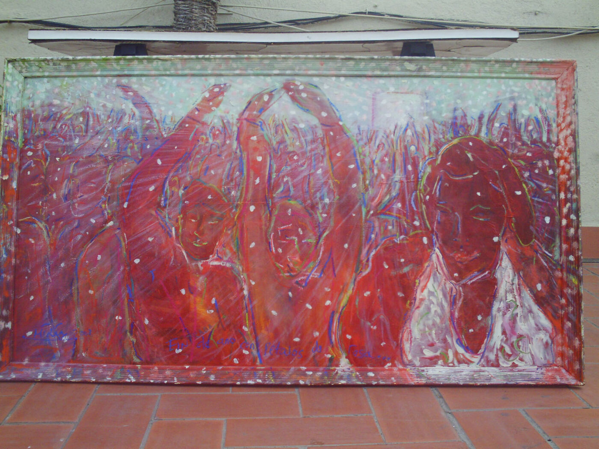
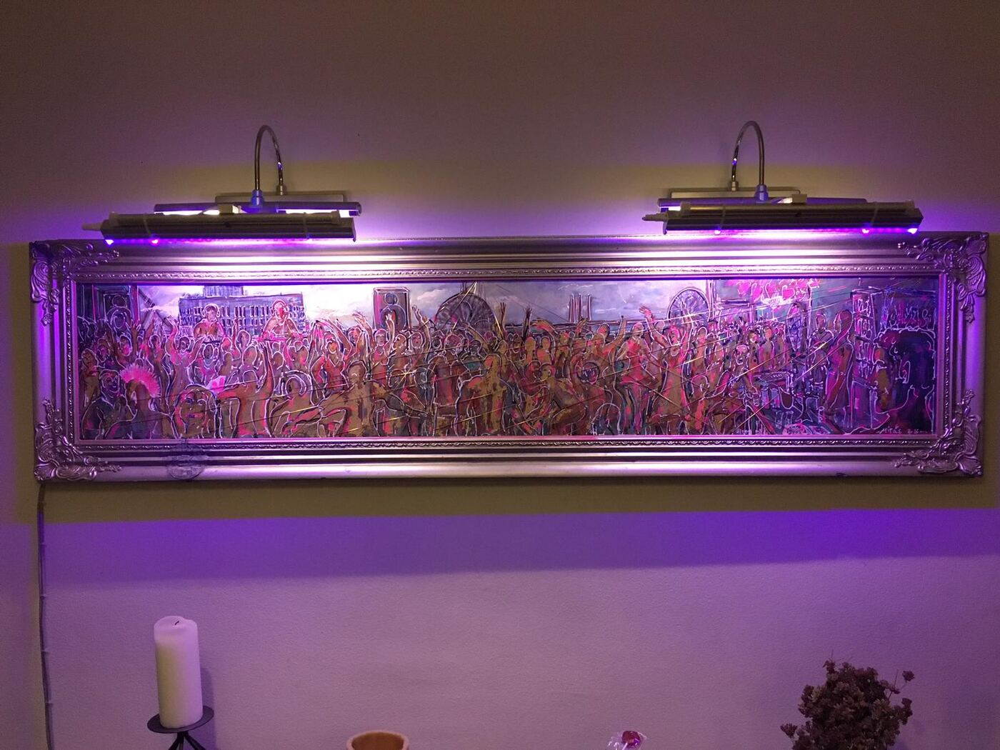
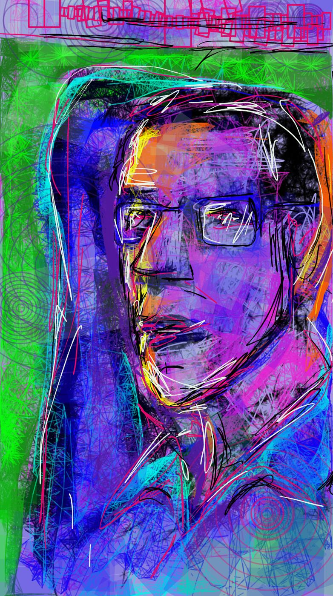
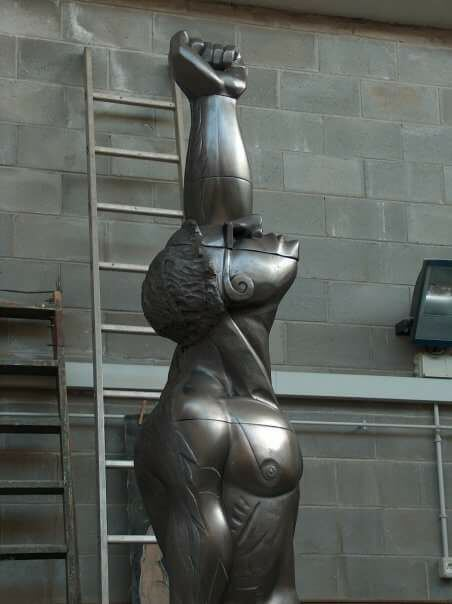

Pintor
Escultor
Performer
Dibujante digital
David
Mirás


Pedazos de vida llenos de música y reflejos.
Entrar en la obra →Índice.
-
01 Entrada en el año con corazones rosasMixta sobre tablex 110 × 90 cm Disponible

-
02 Nati conectólogaÓleo sobre lienzo 60 × 40 cm Disponible

-
03 Rompiendo tiempos sin gravedadMixta y pan de oro 190 × 50 cm Consultar

-
04 Morriña entre amapolasÓleo sobre lienzo 50 × 70 cm Vendida

-
05 DJ en parejaDibujo digital Caja de luz Edición limitada

-
06 Programando píxelesDibujo digital Caja de luz Edición limitada

(02) Vídeo — performance, 42 min
Un cadáver se despierta en un depósito. Con el sonido se despoja de sus recuerdos para emprender el viaje sin ataduras.
Sala Freedonia, Barcelona
Acción sonora: Natan Nexus
42 minutos ininterrumpidos

(03) Escultura — homenaje al pintor Ocaña
Ocaña en tránsito
Talla directa sobre grafito de alta densidad, pulido y bruñido con pincel en bronce.
- Altura
- 320cm
- Diámetro
- 60cm
- Peso
- 600kg
Él entrega sus espejos al mundo para que los demás vean en ellos su propia realidad.
— Tom Puey, coleccionista e historiador
(04) Exposiciones y acciones
-
yo · tú · nosotros · ellas
Inusual Project, Barcelona
Colectiva -
Mutabilidad
Sala Freedonia, Barcelona
Performance -
Testimoni del conflicte
Poble Vell, Corbera d’Ebre
Colectiva -
Miras al otro lado
Barcelona
Taller propio
Escríbeme.
Encargos y compra de obra[EMAIL]
WhatsApp[TELÉFONO]
RedesInstagram [@USUARIO]
TallerMiras al otro lado · Barcelona
© 2026 David MirásAviso legal · Privacidad